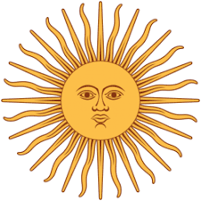

Ouviram do 
<b style="color:mediumspringgreen">ipiranga</b>
as <u>margens</u>
<u style="color: blue;">placidas</u><br>
De um <span style="color: rgb(93, 93, 252);">povo</span>
<span style="color: crimson;">heroico</span>
o <b><i>brado retumbante</i></b><br>
<p>
<span style="color: cyan;">E o sol da</span>
<b style="color: darkgreen;">liberdade,</b>
<samp style="color: darkslateblue;">em raios</samp>
<samp style="color: firebrick;">fulgidos</samp>
<b style="color: greenyellow;">,</b><BR>
<samp style="color: indianred;">Brilhou</samp>
no ceu da 
<b><u>Patria</u></b>
nesse instane.
</p>
<br><br><br><br>
<!-- Usando divs, tente "desenhar" a bandeira da França na página -->
<div style="background-color: blue; height: 50%; width: 15%; float: left;"></div>
<div style="background-color: seashell; height: 50%; width: 15%; float: left;"></div>
<div style="background-color: red; height: 50%; width: 15%; float: left;"></div>
<div style="clear: both;"></div>
<!-- 2. Usando divs, tente "desenhar" a bandeira da Holanda na página -->
<div style="background-color: rgb(158, 18, 18); height: 15%; width: 50%;"></div> 
<div style="background-color: seashell; height: 15%; width: 50%;"></div>
<div style="background-color: blue; height: 15%; width: 50%;"></div>
<!--  Usando a tag img, faça aparecer 3 imagens de super heróis lado a lado, numa mesma "linha" -->
<br><br>


<br><br><br><br><br><br><br><br><br><br>
<div style="background-color: cornflowerblue;height: 15%; width: 30%;"></div>
<div></div>
<div style="background-color: cornflowerblue;height: 15%; width: 30%;"></div